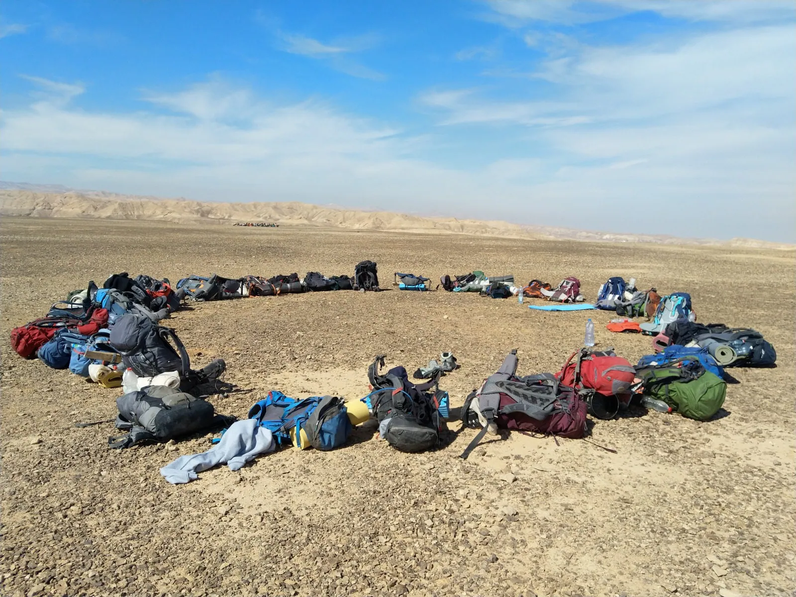
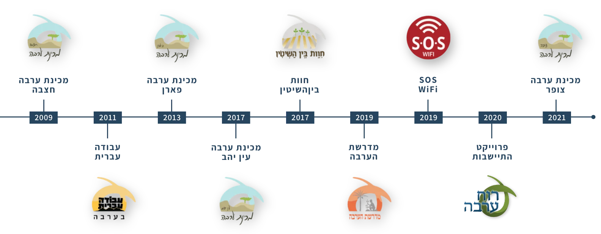
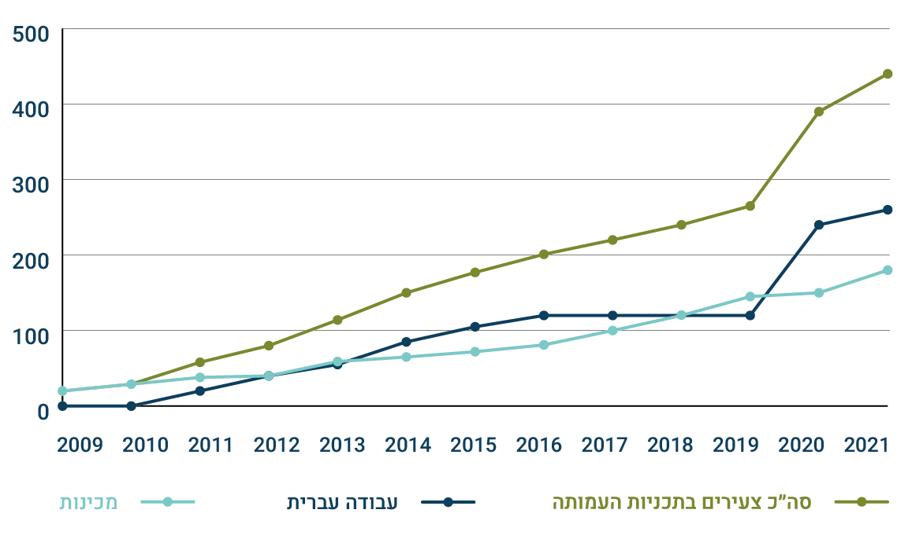

מי אנחנו
חזון העמותה והתפיסה החינוכית
ההתיישבות בערבה היא מההישגים המרשימים ביותר של המפעל הציוני במאה השנים האחרונות. במשך שנים נחשב אזור הערבה לבלתי אפשרי להתיישבות בגלל החום הקיצוני, היעדר מקורות מים, קרקעות לא פוריות והמרחק ממרכזי היישוב. החל משנות ה-50 של המאה הקודמת הוקמו בערבה מושבים, קיבוצים ויישובים שהפריחו את השממה. הפרויקט הציוני ניצח את המגבלות בעזרת צעירים אידיאליסטים שבחרו להתיישב בערבה ולקבוע בה את ביתם.
עמותת רוח ערבה הוקמה בשנת 2009 על ידי בני הדור השני לחלוצי הערבה. חזון העמותה הוא "להיות ארגון מוביל בתהליך פיתוחה וחיזוקה של ההתיישבות בערבה התיכונה, להגדלת חוסנה של החברה הישראלית ומדינת ישראל, באמצעות פיתוח והפעלת תכניות חינוכיות-ציוניות לצעירים בערבה". מאז שנוסדה הקימה העמותה, בזה אחר זה, פרויקטים חינוכיים פורצי דרך.
ליבת פעילות העמותה מבוססת על ציונות ללא ציניות, חיזוק אזור הערבה, חיבור ליהדות ולישראליות במאה ה-21, הצמחת מנהיגות, וחיזוק הזהות והמעורבות של צעירים וצעירות, חילונים ודתיים, מרקע אישי וחברתי רחב ככל האפשר.
התכניות שהקמנו
מכינות ערבה
שלוחות במושבים חצבה (2009), פארן (2013) ועין יהב (2017), ומספטמבר 2021 גם תכנית מכינתית בצופר. המכינות מחנכות נוער אידיאליסטי לשירות צבאי משמעותי ולחיים של שליחות בחברה הישראלית. 35% מבוגרי המכינות הם קצינים, פי שניים מהממוצע בעולם המכינות. בסך הכול 180 חניכים בתכניות המכינתיות בשנה הנוכחית.
עבודה עברית (2011)
תכנית של 7 חודשים לצעירים וצעירות בוגרי שירות צבאי ולאומי: עבודה בחקלאות, לימודים, העמקת הזהות, חיי קבוצה ומעורבות בקהילה. התכנית פרוסה לאורך הערבה ב-7 מוקדי פעילות, ובשנה האחרונה השתתפו בה כ-300 צעירים.
חוות בין השיטין (2017)
מיזם חינוכי-חקלאי-תיירותי שמארח קבוצות מהארץ ומהעולם. המבקרים מתנסים בעבודה חקלאית, ותוך כדי כך מכירים את סיפורה המופלא של ההתיישבות והחקלאות בערבה.
מדרשת הערבה (2019)
מסגרת גג לתכניות עומק לקהלים בוגרים. תכנית שנה ב' מיועדת לבוגרי מכינות ושנות שירות ומשלבת עבודה חקלאית יומיומית ולימוד בית מדרשי מעמיק. במדרשה פועלים גם בית מדרש קהילתי ופרויקט "מפגש ישראלי".
SOS Wifi: תקשורת מצילת חיים
מערכות שמאפשרות תקשורת מבוססת wifi במסלולי טיול ללא קליטה סלולרית. הותקנו בשטח מעל 30 מערכות, שכבר הוכיחו את נחיצותן באירועי חירום. הפרויקט פועל בשיתוף רשות הטבע והגנים.
התיישבות בערבה (2020)
תחום פעילות שממוקד בקידום ההתיישבות בערבה, בשיתוף המועצה האזורית ערבה תיכונה, חבל אילות וקק"ל.
מנוע צמיחה מרכזי בערבה
העמותה מביאה לערבה קרוב ל-500 צעירים בכל שנה. זו ממש מהפכה, שמכפילה את מספר הצעירים בערבה. הם מביאים איתם רוח חדשה, שמושכת צעירים נוספים, וביניהם בני המקום ש"חוזרים הביתה".
הפעילויות הערכיות, ההרצאות והדמויות המובילות מעצימים שיח ערכי שמקרין הרחק מעבר לגבולות האזור. מאות צעירים מתאהבים בערבה בכל שנה והופכים לקהל מובחר להתיישבות עתידית. כבר היום עשרות מבוגרינו חיים בערבה.
העמותה פועלת בשיתוף פעולה הדוק עם המועצה האזורית ערבה תיכונה וקהילות המושבים, ובזכותה נוספו לאזור 60 משרות מלאות וחלקיות בחינוך, הוראה, ניהול ושירותים נוספים.
"שמשימתם היא משימתי"
הגעתי לעמותה לאחר מספר שנים של עשייה חינוכית וחברתית. עבדתי בעמותות חברתיות ולאחר מכן במטה משרד החינוך באגף תכנון ואסטרטגיה. בכניסתי לעמותת רוח ערבה פגשתי מנהלות ומנהלים מעוררי השראה, שפועלים מדי יום לחיזוק החברה הישראלית ולפיתוח הקהילה והחיים בערבה. פגשתי אותם והחלטתי שמקומי פה איתם, שמשימתם היא משימתי.
התאהבתי בסיפור הערבה: חלוציות שקטה וחודרת בנועם הליכותיה, אנשי מעשה שיצרו יש מאין, שעיבדו אדמה שאינה ניתנת לעיבוד, שיישבו חבל ארץ שאינו ניתן ליישוב. הערבה מסמלת את הפיכת החזון למציאות, את ההוכחה שבאמונה ובעבודה קשה גם קרקע מבוקעת ועקרה למראית עין יכולה להיות מניבה ופורה.
אני שותף מלא לחזון עולם המכינות: פיתוח נוער ערכי ועצמאי השואף לחיים מלאי משמעות, חיזוק החוסן החברתי ובניית תשתית לשותפות ואמון בין אוכלוסיות שונות בחברה הישראלית. הצורך במעורבות חברתית ואזרחית, העיסוק בסוגיות הליבה של החברה הישראלית והקהילה היהודית בארץ ובעולם, והרצון לתרום ללכידות החברה ולסולידריות בה הם אבני יסוד בהשקפתי הערכית והניהולית.
אני מאמין שהדרך האפקטיבית ביותר להשפעה חברתית (וגם הארוכה והמאתגרת ביותר) עוברת בשדה החינוכי. חברה מלוכדת, חופשית ומוסרית היא פרי של חינוך מבוסס אמון וברית משותפת. רק סיפור משותף וחיי יום-יום משותפים יוצרים ברית משותפת של ערכים ותפיסות עולם. חינוך כזה חייב ליצור חיבורים בין החלקים השונים של החברה, לאפשר ממשק בריא ומתמשך בין הזרמים והגוונים השונים של האוכלוסייה, ולהאמין בנחיצותה של הרבגוניות כמשאב לצמיחה והתפתחות.
היום יותר מתמיד יש צורך לחזק את האמון בחברה הישראלית ואת האמונה בסיפורנו המשותף. מדינות רבות חוות קיטוב הולך וגובר, ולצערי הרב תחושתי היא שבישראל התופעה חמורה אף יותר. ללא חיבורים בין קהילות שונות מגיעים הפילוג והניכור, ומהפילוג והניכור באים הפחד והשנאה. יצירת חיבורים בין זרמים וקהילות בחברה הישראלית היא שתאפשר לבנות את האמון האיתן ביותר לכינון חברה מלוכדת, סולידרית ומוסרית.
׳רוח ערבה׳ פועלת כבר למעלה מ-14 שנה לקידום חברה כזו בדיוק. אנו מחנכים לחיזוק הזהות האינדיבידואלית והשייכות הקולקטיבית של כל אדם, ובמקביל בונים מעגלי אמון הולכים ומתרחבים בתוך החברה הישראלית.
׳רוח ערבה׳ היא חממה חברתית שמוכיחה שתיתכן, ואף קיימת, מציאות אחרת. פעילות העמותה מתבססת על מפגשים שמונעים מסקרנות ולא מפחד, ועל ממשקים מיטיבים בין דתיים לחילוניים, בין פריפריה למרכז, בין יהודים לערבים. תחת כנפי העמותה מצליחות השקפות עולם שונות לחיות יחד ולשגשג. בזכות התפיסה הזו אנו זוכים לראות פעם אחר פעם כיצד ניתן לחזק את הברית המשותפת ואת האמון האישי בקרב צעירים בישראל.
אני גאה להיות חלק מעמותת ׳רוח ערבה׳, גאה בתרומתה לערבה ולחברה הישראלית, ומאמין בחשיבות עשייתנו החינוכית והחברתית.
מיכאל צדוק
"הגשמת החלום הציוני, הלכה למעשה"
כבר שנים ארוכות שאני "דרומי", אבל לא גדלתי כאן. נולדתי וגדלתי בקיבוץ בארות יצחק שבמרכז הארץ. אני נכד גאה לסבים וסבתות ז"ל שעלו לישראל בשנות ה-30 של המאה הקודמת מתוך חלום ציוני להקים מדינה ולהכות שורש. צד אחד של משפחתי הקים את קיבוץ כפר עציון בשנת 1944, והצד השני הקים את קיבוץ בארות יצחק ב-1943, כ-5 ק"מ מזרחית לעיר עזה.
נולדתי וגדלתי לתוך סיפור משפחתי של התיישבות, הגשמה, מאבק ושכול, לתוך סיפור שבו כמעט מחובתו של כל דור לקחת אחריות על חלום הדורות: מדינת ישראל.
בגיל 18 התגייסתי לסיירת מטכ"ל, ושירתי ביחידה כלוחם, מפקד וקצין לאורך עשור. נתתי שנים יקרות מחיי וקיבלתי עוד יותר: חוויות, תובנות, ניסיון, בגרות וחברים. השתחררתי בדרגת רס"ן ופניתי ללימודים: תואר ראשון בפילוסופיה יהודית ומנהל עסקים באוניברסיטה העברית, ותואר שני במנהל ומדיניות ציבורית באוניברסיטת בן גוריון.
עם שחרורי מצה"ל, ובמקביל ללימודי התואר הראשון, נחשפתי ל"תופעה" שהפכה מאז לחלק מרכזי מחיי: עולם המכינות הקדם-צבאיות המעורבות והחילוניות. בני ובנות 18, רגע לפני השירות הצבאי, עוצרים את החיים לשנה לטובת לימודים, תרומה לקהילה, גיבוש זהות, היכרות עם החברה הישראלית ועוד הרבה דברים טובים. גיליתי "שמורת טבע" ישראלית וייחודית, שבה עוד מדברים על ערכים, משמעות ונתינה בעיניים נוצצות, שמורה ששואפת להצמיח מתוכה את מנהיגות העתיד של מדינת ישראל.
החלטתי שאני מצטרף, אפילו רק לשנה אחת. מאז עברו 15 שנים ואני עדיין בפנים. התחלתי כמחנך במכינת "עין פרת" שליד ירושלים ועבדתי שם שנתיים. בשנת 2009 קיבלתי הצעה לרדת לערבה ולהקים בה את העמותה ואת המכינה הראשונה, במושב חצבה. קפצנו על ההזדמנות, ירדנו לערבה, הובלתי את הקמת המכינה ועמדתי בראשה בחמש השנים הראשונות.
עם התפתחות העמותה והרחבת הפעילות מוניתי ב-2014 למנכ"ל העמותה. זכיתי להוביל ולהקים, יחד עם חבורה נפלאה של אנשים, מפעל חינוכי פורץ דרך בערבה, מפעל שבעיניי הוא הגשמת החלום הציוני, הלכה למעשה.
בשנת 2009 פעלנו במושב אחד עם 20 נערים ונערות. בשנת 2021 כבר פעלנו ב-13 מוקדי פעילות בערבה, עם קרוב ל-500 צעירים בשנה בגילאי 18–25, בתכניות קדם-צבאיות ופוסט-צבאיות. המספרים בוודאי מעידים על הצלחה ועל התפתחות מהירה, אבל מעולם לא התמקדנו רק בהם. התמקדנו בעיקר בעומק התהליך החינוכי, באמונה בכל אדם, בתרומה ובמצוינות.
אנחנו בעמותת 'רוח ערבה' נמשיך לפעול ברוח זו, ונמשיך לחנך מאות צעירים בכל שנה לטובת חיזוק הערבה ומדינת ישראל.
אבישי ברמן
ציר התפתחות




רוצים להכיר אותנו מקרוב?
הכירו את התכניות, את הצוות, או דברו איתנו ישירות.